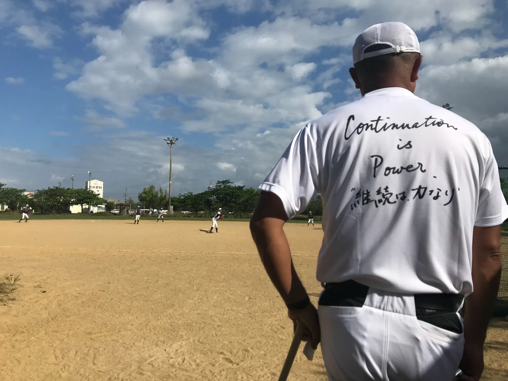

ABOUT THE TOURNAMENT

渡辺 英昭
全国中学硬式野球育成会事務局
育成会ドリームカップ運営事務局 代表
代表挨拶
本日ここに、第13回育成会ドリームカップを開催できますことを、 心より嬉しく思います。 全国各地から集まってくださった選手の皆さん、 そして日頃から熱心にご指導いただいている指導者の皆様、 送り出してくださった保護者の皆様に、心から感謝申し上げます。
この育成会ドリームカップは、今年で13年目を迎えました。 この13年間、私たちは一貫して「子どもたちに夢と希望を与える場の創出」という理念を掲げ、 全国の中学3年生の皆さんに硬式野球を通じた成長の機会を提供してまいりました。
中学3年生という時期は、皆さんにとって人生の大きな転換点です。 高校野球という新たなステージを前に、軟式野球で培った技術を硬式へと発展させる選手もいれば、 硬式野球の空白期間を作らず継続的に技術を磨く選手もいます。このドリームカップは、そのすべての選手にとって、高校野球への大切な準備期間となる貴重な場なのです。
選手の皆さん、この大会で全力でプレーしてください。 そして、野球の楽しさ、仲間との絆の大切さを、心から感じてください。 皆さんの夢と希望が、このグラウンドで大きく花開くことを心から期待しています。
令和七年
全国中学硬式野球育成会事務局
育成会ドリームカップ運営事務局
代表 渡辺英昭
大会趣旨
本大会は、中学校野球を終え部活動を引退した中学3年生の子どもたちに、新たな挑戦と成長の場を提供することを目的としています。 硬式野球を通じて県外チームとの交流を深め、技術向上はもちろん、スポーツマンシップや協調性を育み、心身の健全な育成を図ります。 また、多くの仲間との出会いと絆を大切にし、将来の夢に向かって前進する若者を応援します。
会期
令和7年(2025年)12月26日(金)〜28日(日)
※天候や社会情勢等により変更になる場合があります
会場
- 金武町ベースボールスタジアム
- バイトするならエントリー宜野座スタジアム
- 具志川商業高等学校
- ONNA赤間ボール・パーク
参加資格・構成
- 中学校育成チームおよび主催者が認めたチーム
- 県内7チーム / 県外9チーム
- 全員中学3年生で構成
- 11名以上30名以下
大会形式
- トーナメント形式で実施
- 全チーム順位決定戦を実施
主催・協力
主催: 全国中学硬式野球育成会
協力: 全国中学硬式野球育成会事務局
運営協力: 日本ウエルネス高等学校沖縄野球部
沖縄県ジュニア育成会 他
お問い合わせ
全国中学硬式野球育成会事務局
代表: 渡辺英昭
E-mail: bb35@spotlight35.com